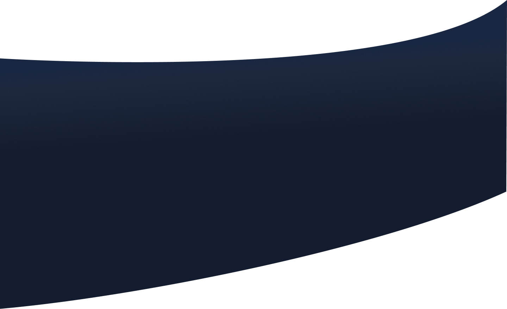

<section id="aboutMe" class="background-color">

    

    <div class="content-container">
        <div class="about-me-container">
            <h1>About me</h1>
            <p>Hey there! I'm Florian, a frontend developer fueled by a passion for crafting
                user-friendly digital experiences. With a talent for problem-solving and an eye
                for detail, I specialoze in translating complex ideas into elegant desgins.</p><br>
            <p>Let's connect and create something amazing together!</p>
            
            <div class="description-container">
                <div class="loaction-img"></div>
                <div><p>Flexible in terms of working environments, I can work effectively both on-site in Cologne and remotely.</p></div>
            </div>
            <div class="description-container">
                <div class="idea-img"></div>
                <p>I am open-minded and always looking for personal challenges to constantly improve my knowledge and skills.</p>
            </div>
            <div class="description-container">
                <div class="puzzle-img"></div>
                <p>In my profession, programming isn't just about writing code; it's a creative form of problem-solving.</p>
            </div>
              

        </div>
        <div class="img-container">
            
        </div>
    </div>
</section>